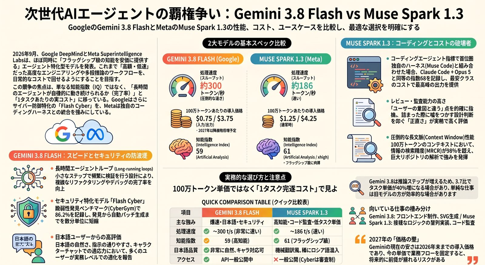

今日の深掘り — Gemini 3.8 Flash × Muse Spark 1.3
同じ日に、安いAIが2つ出たGemini 3.8 と Muse 1.3。安いが、何でもできるわけではない
公開から約1日。議論は点数から実測の当たり外れへ移った。Gemini 3.8 Flash は一番賢いモデルではなく、24時間回し続けられる十分に賢いモデル。Muse Spark 1.3 は実装の既定ではなく、並列ワーカー／レビュー／無料実験。Cyber は1日経っても一般の実測がほぼ無い。Copilot にはどちらも未搭載。アプリに 3.8 が無いのも段階配信として正常である。
1枚で見る「Gemini 3.8 Flash × Muse Spark 1.3」

24時間後の一文はこれだ。頭は良い。家（ハーネス）と仕事の種類で当たり外れが大きい。
朝との差分：点数から、向き不向きへ
| 朝 | 夜（09-03 20時台） | |
|---|---|---|
| 議論 | ベンチと価格ショック | 触った人の成功／失敗 |
| Muse の位置 | 普段使いできると思われた | 全部の代わりには早い。試し役・見直し役向き |
| Gemini の位置 | 高いモデルの安い版 | 速く回せる中くらい。画面作りと日本語向き |
| 入手 | 公式APIと専用CLI | OpenCode 無料枠が Muse の主戦場 |
| Cyber / max | 未公開・審査制 | 変わらず。一般は検証不能 |
Muse 1.3：解けた課題と、解けなかった課題
公式が解くのは知能不足ではない。フロンティア級を、長時間エージェントの実務コストで回せるか、である。価格は据え置き $1.25 / $4.25、キャッシュ $0.15。内部比較はツール約20%減・トークン約25%減。ただし AA の Intelligence Index タスク単価は $0.40 → $0.55 に上がっている。入力トークン約57%増のためで、Meta 内部比較とは別系統だ。一般が今使えるのは xhigh。max（AA 62、Coding Agent Index 68）は安全審査中。
解けた：安く何本も試したい人
夜の主戦場は OpenCode の無料枠。「無料で久しぶりにエージェントを体験」「爆速。学習はされる」。有料フロンティアの前に感触を掴む入口ができた。対価は学習利用。機密には向かない。
解けた：雑に回す実装ワーカーとレビュー役
1時間約$1、Fable なら少なくとも$20、という一次報告は反証されていない。計画は高いモデル、実装は Muse、という分業が具体化した。日本語の最も有用な反応はレビュー。「ユーザーの意図と違う」を指摘するのが上手い。詰まったとき嘘をつかず止まる。ただし ULTRA 1本が 43ターン・サブエージェント6・約570万トークンという数字も出た。安くても深く掘らせると量は食う。
解けない：巨大レガシーと日本語本文
百万行規模の ERP で40分ループして停止し、GLM 5.3 に戻した例がある。既存プロジェクトを壊した報告もある。「終わったと嘘をついてループする」。日本語は機械翻訳っぽい、ロシア語が混ざる、出力が安定しない。レビュー役としては頭が良くても、日本語本文の既定にはならない。Windows ネイティブは未解決。ホームから起動するとプロファイルが Low integrity になり IDE が落ちる、という回避策が出ている。
Coding Agent Index は Muse Code + 1.3 max = 68 で Claude Code + Opus 5 と同点。ホームグラウンド測定であり、モデル差かハーネス差かは切り分けにくい。Fable 5.1 は未掲載。
Gemini 3.8：よく働く中型。Cyber は評価不能
Philipp Schmid の整理が一番正直だ。より小さいステップで進み、より頻繁に検証する。トークンは増えるが、テストに使っている。同じ単価で賢くなったのではなく、同じ単価でより長く働かせるモデルである。出力は約300 tok/s。Muse の約186より速い。Index は 59。
向く：常時回すエージェントとフロント
「一番賢いか」ではなく「何体を24時間走らせられるか」。Agent Arena は #32 から #14。1タスク中央値約 $0.22。フロント／SVG／小さいゲームが最も盛り上がった。画像→高精細SVG、自画像ベクター、HTML/JS が速くて安い。ただし OpenCode 上では Muse の方がバイブコーディングで上、という声も同日にある。独占ではない。
向く：日本語の清書。向かない：短いSWE
「早い、日本語が分かりやすい、指示が通る」。GPT下書き→3.8 medium 清書は維持してよい。一方、単純なSWEでは Fable より高い／使えないという声。考えすぎて不要なツールを呼ぶ。4ファイルをほぼ読まず一般論を返す例もある。効率最優先の短い仕事は 3.7 に残す、が公式の注記とも一致する。
Cyber：能力は出た。製品は入場制限
CyberGym 86.2%、Chrome パッチ 2.6倍、Cloud は数ヶ月級を2時間未満、という公式数字は変わっていない。1日後に増えたのは制度の話だけ。一般の実測はほぼゼロ。公開 3.8 でできるのはレビューと下書き。自律発見と自動パッチは Fairwind。650以上のパートナー、MFA、再配布禁止。Snowflake の「連続スキャンできる価格」が本質のまま。
表示の値段と、終わった1タスクの値段
- Gemini。単位価格は据え置き。高 effort で出力トークン約30%増、タスク単価は 3.7 より約40%高い（AA、$0.58）。導入価格は年末まで。2027-01-01 から $1.50 / $7.50。今の安さでフローを固定すると4ヶ月後に壊れる。
- Muse。59+帯の他社比では最安。xhigh の Coding Agent Index は 64 / タスク単価 $1.72 で、Claude Code + Opus の $8.17 の約5分の1。Contributor $0.10 / $0.20 と OpenCode 無料は学習還元。Everyday $5 の表記が 1.2 のまま残っているページがある。契約画面で 1.3 を確認する。
- 見る数字。100万トークン単価ではない。完了した1タスクのコストと、人手介入と、嘘の完了報告が無かったか。
今日の使い分け：置き換えない
| 仕事 | 今夜の一手 |
|---|---|
| 常時エージェント / フロント / SVG | Gemini 3.8。3.7 と横比較。thinking は仕事で分ける |
| 対外日本語 | GPTで分解、3.8 medium で清書。アプリ未着なら AI Studio |
| 新規リポジトリの実装ワーカー | Muse。OpenCode 無料で感触、本番は Standard |
| レビュー / 意図の監査 | Muse。適用は別の実行役 |
| 短い単純チケット | 3.7 か Fable。3.8 の勤勉さはここでは損 |
| 百万行レガシー | どちらにも任せない。隔離 worktree で先に試す |
| 脆弱性の自動パッチ | Fairwind。公開 Flash は下書きまで |
| Copilot だけ | 今日は不可。3.7 まで |
事実・解釈・まだ確定していないこと
空。 両モデルは 09-02 公開。Gemini Flash は開発者経路で GA、Cyber は Fairwind。Muse は Muse Code / Meta API / OpenCode。max と重みと Watermelon は未公開。Copilot 未搭載。
雨。 速さ・量産は Gemini。トークン効率とレビューの癖は Muse。丁寧なSWEはまだ Claude。SOTA宣言を受け入れた評価には、1日ではなっていない。
傘。 同じ本番タスクを 3.7 / 3.8 / Muse 標準で3本。フロント1、SWE1、日本語1。完了率・介入・実トークンだけ取る。巨大レガシーと Contributor の機密は外す。
未確定。 messy monorepo の複数日運用。Fable 5.1 入りの Coding Agent Index。max 一般公開。日本語の長文実装。Standard でのコスト実測。Astra。Notebook 裏側への 3.8 到達。
同じ日に安い前線が2つ来た。1日後の正解は置換ではない。Gemini は常時回す中型。Muse は安く試す実装とレビュー。Cyber はまだ箱の中にいる。